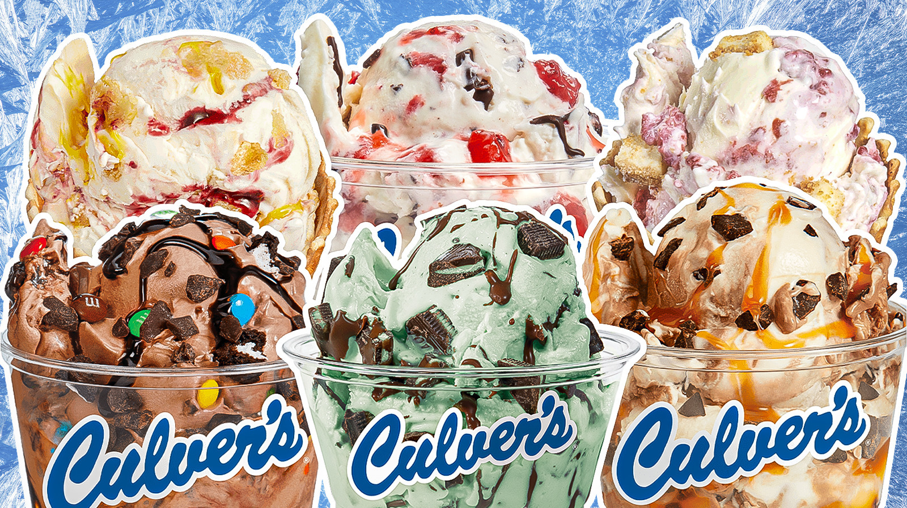

custard!!!
shout out to mr. b, personally i wouldn't say custard would be my top choices for desserts, but to be honest, custard does sound pretty good right now!! i was thinking of custard pudding, but apparently he meant frozen custard, so that changes things...
this is what frozen custard looks like:

apparently it's a delicacy in wisconsin, but im not a wisconsinite, so i wouldn't know, but it looks pretty good :)